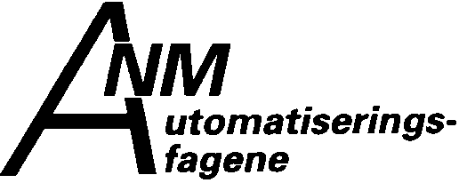

NM i automatiseringsfagene
22.-23. mai 1995
hos Siemens på Linderud
Vi har herved gleden av å invitere deg til å besøke mesterskapet og tilhørende seminar.
Finalen foregår hos Siemens på Linderud, hvor 12 kandidater
kjemper om tittelen. Her kan du gå rundt og se på at finalistene
arbeider. Slik får du et godt innblikk i det imponerende
kunnskapsnivået til lærlinger og unge fagarbeidere. I tilknytning til
finaleområdet er det stands med informasjon om fagutdannelsen og
bransjen.
Eget seminar og paneldebatt
Mesterskapet vil bli åpnet 22. mai av statssekretær Astrid Søgnen.
Etter åpningen arrangeres det et seminar
som setter søkelyset på betydningen av et godt samarbeid mellom
næringsliv og skoleverk for å skape konkurransedyktig industri.
Foruten statssekretæren vil sentrale næringslivsfolk holde innlegg på
seminaret, som avsluttes med en paneldebatt.
Arrangementene vil ha interesse for opplæringsansvarlige,
driftsansvarlige og ansvarlige for automatiseringsfagene i bedriftene
og lærere, rådgivere og undervisningsinspektører i skolene.
Informasjon/Påmelding
Les mer om arrangementene i vedlagte seminar-program. Sammen med programmet finner du også
et påmeldingsskjema.
Påmeldingsfristen er 12. mai 1995.
Velkommen!
Arrangør: IFEA (Industriens Forening for Elektroteknikk og Automatisering)
Medarrangører: TBL, PIL, NIL, Festo Didactic,
Siemens Training Center